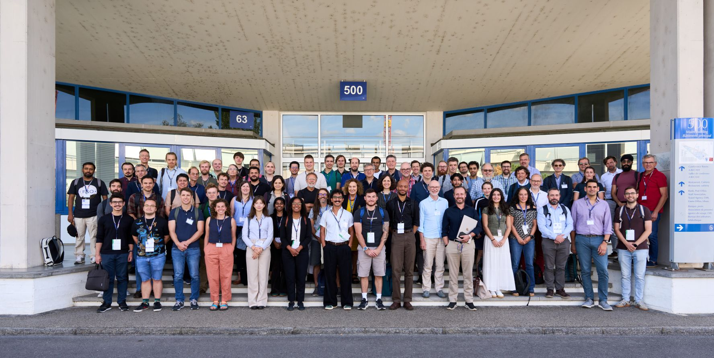
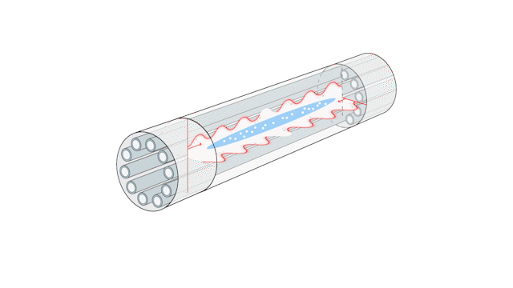
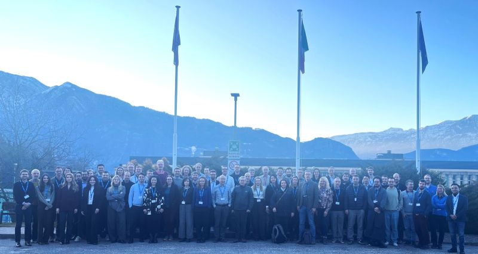
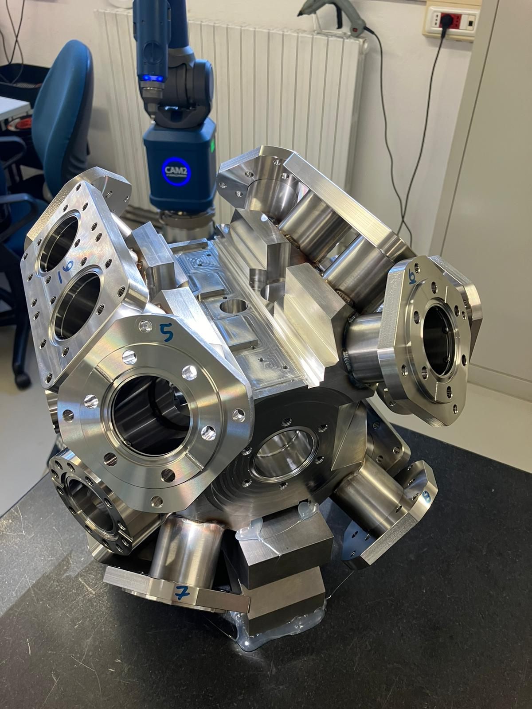
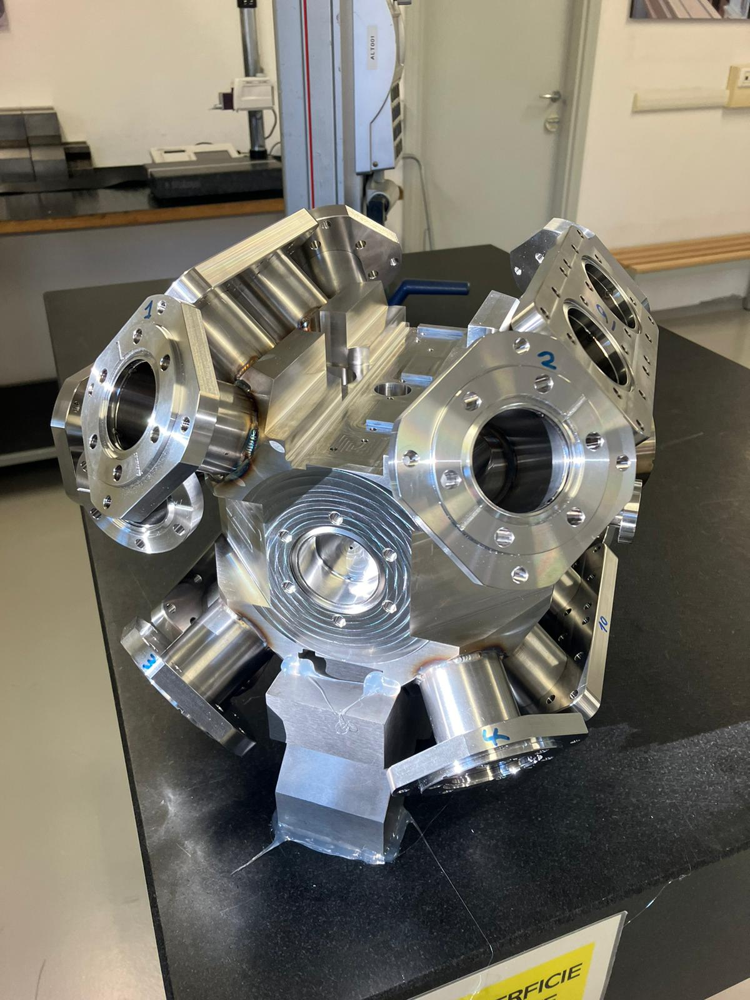

GDR Gaz Quantiques in Strasbourg
Participation in the workshop at CESQ.

Participation in the workshop at CESQ.

Participation in the AICE meeting at CERN.
The Q-PLEX project was selected by the QuantXium Mat-Premat Committee.
The atomSmltr article was published in SciPost Physics Codebases 76 (2026).
Husain Hamed joins the group as a postdoctoral researcher working on the Yb system.
Hriday Bhardwaj starts his PhD work on the development of a cold ytterbium system.

Periodic meeting in Trento, Italy.

The vacuum chambers for the Sr and Yb experiments were machined at SAES-RIAL.


PhD defence of Geovan Santana de Figueiredo.
Preprint available as arXiv:2511.20596 [physics.atom-ph].